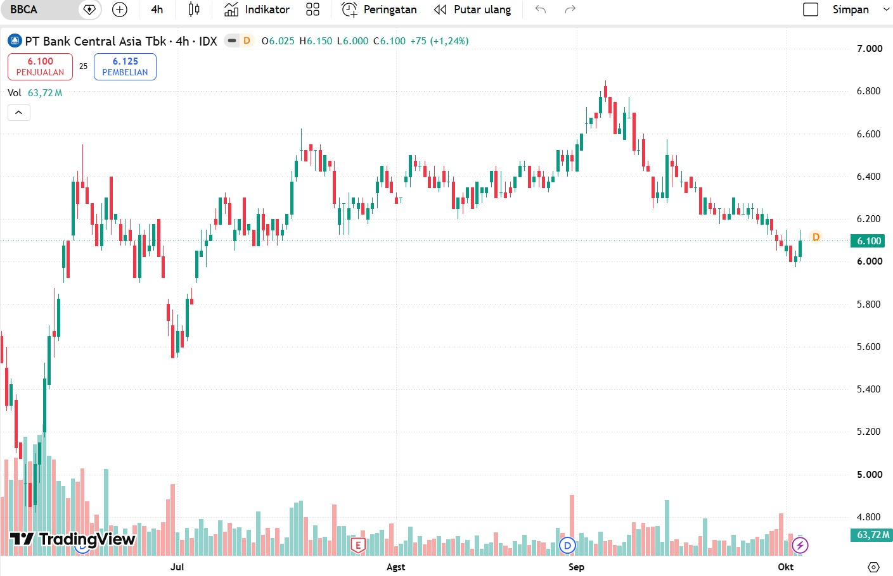

Detail Transaksi: BBCA (PT Bank Central Asia Tbk)
| Tanggal Beli | 2026-09-18 |
|---|---|
| Harga Beli | Rp 10.150 |
| Jumlah Lot | 10 |
| Total Nilai | Rp 10.150.000 |
| Sekuritas | Stockbit |
| Status | Hold |

Narasi Evaluasi
Saham BBCA dibeli pada harga 10.150 sebanyak 10 lot dengan total nilai Rp 10.150.000. BBCA dipilih karena termasuk saham berkapitalisasi besar dengan likuiditas tinggi dan fundamental perbankan yang kuat.
Strategi pembelian ini lebih diarahkan untuk jangka menengah hingga panjang, sehingga fluktuasi harga harian tidak dijadikan dasar utama keputusan.
Hingga saat ini posisi masih berstatus Hold karena rencana awal belum berubah dan belum ada sinyal yang mengharuskan posisi ditutup.